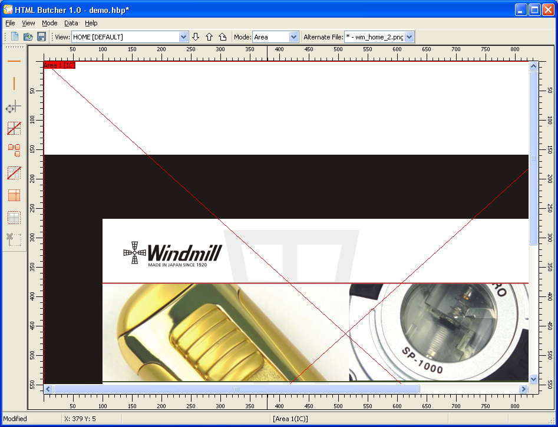

To start a new project, use the → menu.
First you need to add one or more FILES. Go to the → menu, and add one or more layout files.

Next you need to create one or more MASKS. Go to the → menu, and add one or more masks.
Now you create a VIEW for each of the HTML pages that will be generated. Go to the → menu, and add one or more views.
On the main screen, select the newly created VIEW on the "View" selection box.
